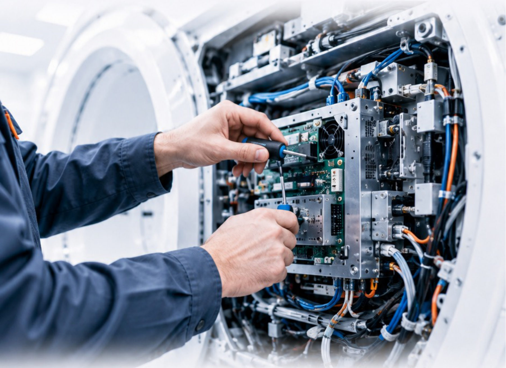
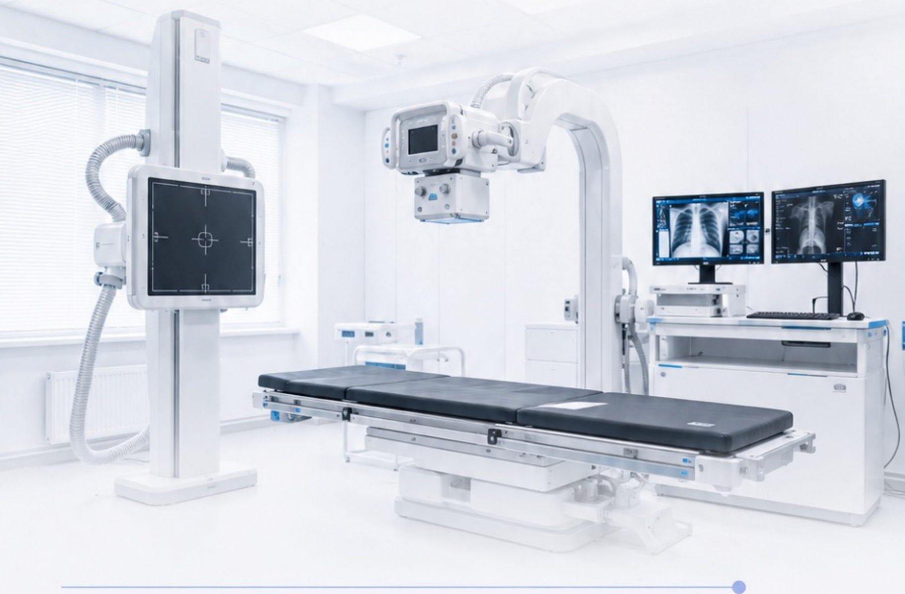

Гарантийное обслуживание
Выполняем гарантийные обязательства производителя на оборудование, которое поставили и запустили.
После запуска оборудование остаётся в контуре сервиса «М-Актив». Сервис — это наша собственная техническая компетенция, а не работа субподрядчиков.
Обслуживаем как поставленное нами оборудование, так и уже работающее в клинике.
Выполняем гарантийные обязательства производителя на оборудование, которое поставили и запустили.
Выезд инженера, поиск неисправности, заключение о техническом состоянии.
Восстановление работоспособности с оригинальными комплектующими.
Регламентные работы по графику производителя — чтобы аппарат не простаивал.
Обслуживание на год и дольше с понятной стоимостью и сроками реакции.
Оригинальные комплектующие и запасные части в рамках сервисных контрактов.

Инженеры «М-Актив» проходят обучение у производителей и работают по их регламентам. Это значит — оригинальные запчасти, заводские процедуры и сохранение гарантии.

«М-Актив» разделяет ответственность за результат с заказчиком. А программа trade-in позволяет учесть стоимость старого оборудования при переходе на новое.